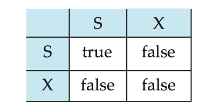
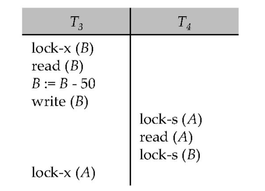
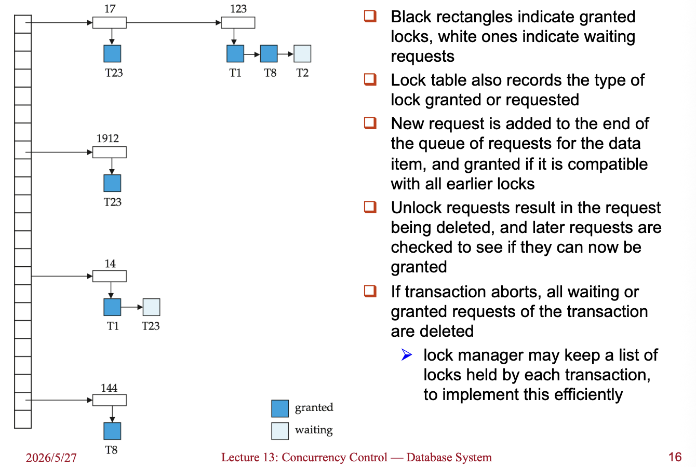
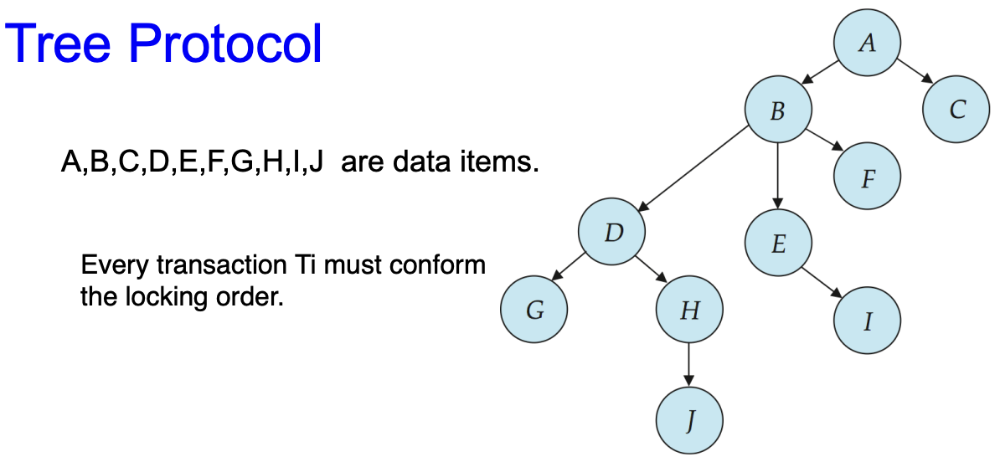
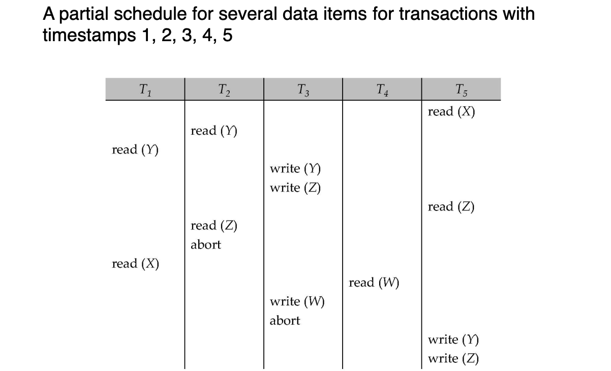
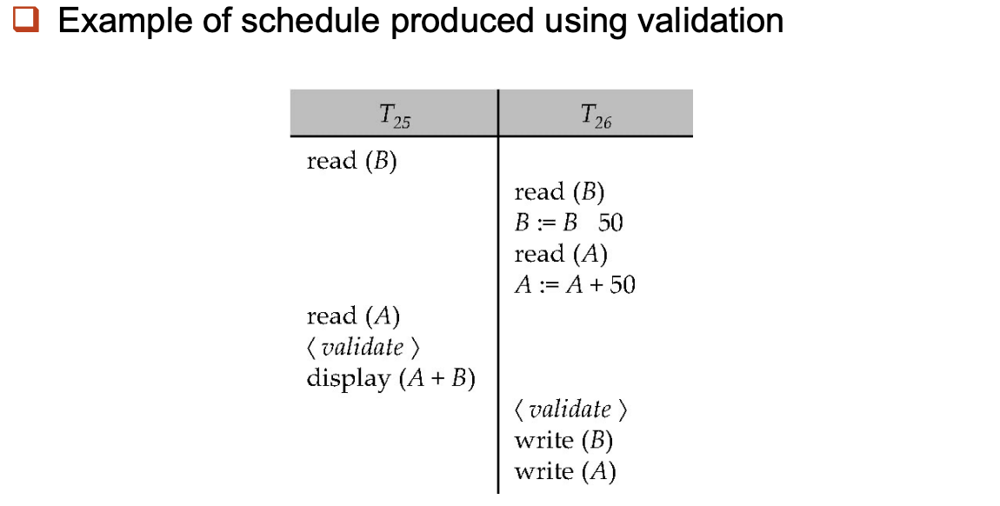
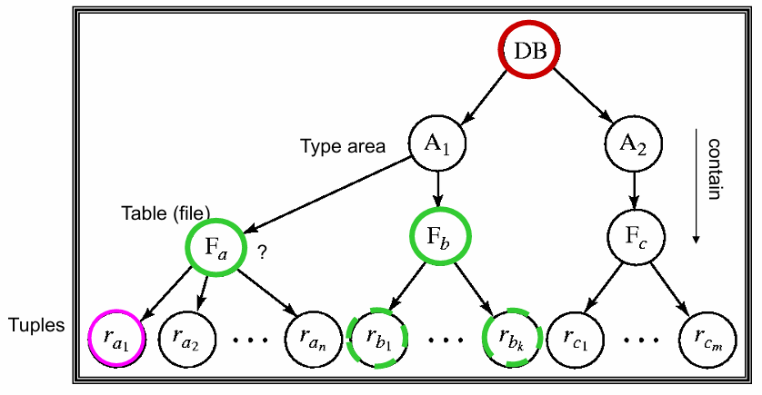
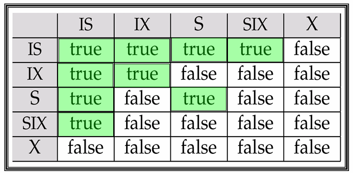
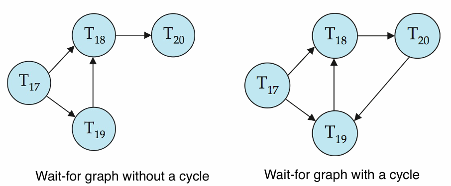

Concurrency Control¶
Abstract
Concurrency control 的目标是在多个 transaction 并发执行时，仍然保证数据库的 correctness。
这一讲主要讨论不同的并发控制协议：lock-based protocols、graph-based protocols、timestamp-based protocols、validation-based protocols、multiple granularity、multiversion schemes，以及 deadlock handling。
13.1 Lock-Based Protocols¶
13.1.1 Lock-Based Protocols¶
Lock-based protocol 要求 transaction 在访问 data item 之前先获得对应的 lock。
- Shared lock,
S(共享锁)：只允许读，不允许写 - Exclusive lock,
X（排他锁）：同时允许读和写
锁请求向并发控制管理器（concurrency-control manager）发出，事务在请求被批准后才能执行。
Lock compatibility matrix

- 如果请求的锁与该数据项上其他事务已持有的锁兼容，则可以授予事务在该数据项上的锁。
- 任意数量的事务可以持有该数据项上的共享锁，但如果任何事务持有该数据项上的排他锁，则其他任何事务都不能持有该数据项上的任何锁。
- 如果无法授予锁，请求事务将被强制等待，直到所有不兼容锁都被释放，然后授予该锁。
也就是说：
- 多个 transaction 可以同时持有同一数据项的
Slock。 - 只要某个 transaction 持有
Xlock，其他 transaction 不能再获得S或Xlock。
Example of a transaction performing locking
T2: lock-S(A)
read(A)
unlock(A)
lock-S(B)
read(B)
unlock(B)
display(A + B)
如果在 \(T_2\) 读完 \(A\) 并且释放锁之后，有另外一个事务修改了 \(A\) 的值，那么这时 \(\text{display}(A + B)\) 可能既不是旧状态的和，也不是新状态的和，所以需要更严格的 locking protocol。
Pitfalls of Lock-Based Protocols¶
Lock-based protocol 可能带来两个典型问题：Deadlock 和 Starvation
Deadlock¶
Deadlock (死锁) 指多个 transaction 相互等待对方释放 lock，导致都无法继续执行。

此时 \(T_3\) 持有 \(B\) 的 lock 并等待 \(T_4\) 释放 \(A\) 的锁， \(T_4\) 持有 \(A\) 的 lock 并等待 \(T_3\) 释放 \(B\) 的锁，两者形成循环等待。
- 处理方法通常是 rollback 其中一个 transaction，释放它持有的 lock
Starvation¶
Starvation (饥饿) 指某个 transaction 长时间无法获得需要的 lock，这通常是因为并发控制管理器（Concurrency Control Manager）的设计存在缺陷
可能原因：
- 一个事务可能正在等待某个数据项上的排他锁，而此时一系列其他事务不断地请求并获得该数据项上的共享锁。
- 同一个事务因为死锁而被反复回滚，某一事务多次作为牺牲者被回滚
解决时通常需要公平的等待队列，或者记录 transaction 被 rollback 的次数。
The Two-Phase Locking Protocol¶
2PL 是一种确保冲突可串行化调度的协议，其要求每个 transaction 的 locking 行为分成两个阶段：
- Growing phase：只能申请新的锁，不能释放任何锁
- Shrinking phase：只能释放锁，不能再申请新的锁
只要事务遵守这个规则，2PL 可以保证产生的调度是 conflict-seriazable
- 把 transaction 获得最后一个 lock 的时刻称为 lock point，把各个事务按照其 lock point 的顺序排序，可以得到等价的 serial schedule
Limitation
- 2PL 的问题：
- 无法保证 deadlock 不发生
- 可能发生 cascading rollback（级联回滚）
- 因此实际系统通常使用 strict 2PL 或 rigorous 2PL 的变体。
关于 2PL 的两种更严格的策略：
- Strict Two-Phase Locking：要求 transaction 持有所有
Xlocks 直到 commit 或 abort- 保证 strict schedule，避免 cascading rollback，恢复的过程更简单
- Rigorous 2PL：要求 transaction 持有所有 locks，包括
S和Xlocks，直到 commit 或 abort- schedule 的 commit order 就是 serial order；实现简单，但并发度更低
2PL & Conflict Serializability
2PL 是“可串行化”的充分条件，但不是必要条件
但是，如果不使用 2PL，就无法保证在任意情况下都能“可串行化”
13.1.2 Lock Conversions¶
2PL 可以允许 lock mode conversion，但 conversion 也要遵守 two-phase 的限制
Two-phase locking with lock conversions:
- Growing phase 中允许：
- acquire
Slock - acquire
Xlock - convert
Slock toXlock（upgrade）
- acquire
- Shrinking phase 中允许：
- release
Slock - release
Xlock - convert
Xlock toSlock（downgrade）
- release
Automatic Acquisition of Locks¶
实际数据库系统不要求程序员手动加锁和释放锁，系统会根据 transaction 自动加锁。
- 一种简单规则：
read(Q):
if Ti does not hold a lock on Q:
lock-S(Q)
read(Q)
write(Q):
if Ti holds S lock on Q:
upgrade Q to X
else if Ti does not hold a lock on Q:
lock-X(Q)
write(Q)
释放 lock 的时机由具体协议决定。
- Basic 2PL：进入 shrinking phase 后释放
- Strict 2PL：X-lock 到 commit / abort 时释放
- Rigorous 2PL：所有 locks 到 commit / abort 时释放
Lock Manager¶
锁管理器（lock manager） 可以作为一个单独的进程来实现，事务会向它发送加锁请求和解锁请求。
- 收到加锁请求后，会回复授予锁的消息（lock grant message）；
如果发生死锁，也可能回复一条消息，要求该事务进行回滚（roll back）。 - 发出请求的事务会一直等待，直到它的请求得到锁管理器的响应
Lock Table
- 锁管理器会维护锁表（lock table），用来记录已经授予的锁，以及正在等待处理的锁请求
- 锁表通常为一个内存中的哈希表（in-memory hash table），以被加锁的数据项名称作为索引

13.1.3 Graph-Based Protocols¶
Graph-based protocol 是 2PL 的一种替代方法。
它对数据项集合 \(D = {d_1, d_2, \dots, d_h}\) 定义一个 partial ordering：\(\rightarrow\)
- 如果一个 transaction 同时访问 \(d_i\) 和 \(d_j\)，且存在 \(d_i \rightarrow d_j\) ，那么它必须先访问 \(d_i\)，再访问 \(d_j\)。
- 所有数据项和偏序关系构成一个 directed acyclic graph，称为 database graph
Tree Protocol¶
Tree protocol 是一种简单的 graph-based protocol，事务加锁时必须遵守树中的父子顺序

规则：
- 在这个协议中，只允许使用 exclusive lock，也就是 X-lock
- Transaction 的第一个 lock 可以加在任意 data item 上，之后只有在持有 parent 的 lock 时，才能 lock 某个 child
- Data item 可以在任意时候 unlock
- 一个 data item 一旦 unlock，之后不能被同一个 transaction 重新 lock
Tree protocol 的优点：
- Guarantees conflict serializability and deadlock freedom
- 不要求遵守 2PL，允许在之后继续申请别的 lock 前释放某些 lock
- 缩短了等待时间，增强了并行性；没有死锁，不需要 rollback
但它也有缺点：
- 缩短了等待时间，增强了并行性；没有死锁，不需要 rollback
- 可能需要锁住一些本来不需要访问的数据项，只是为了到达目标节点
- 可能产生 cascading rollback，因为 release lock 比较早
13.2 *Timestamp-Based Protocols¶
每个事务进入系统时都会被分配一个时间戳（timestamp）。如果一个较早进入系统的事务 \(T_i\) 的时间戳为 \(TS (T_i)\)，那么后来进入系统的新事务 \(T_j\) 会被分配一个时间戳 \(TS(T_j)\)，满足：\(TS(T_i)<TS(T_j)\)
- 该协议通过管理事务的并发执行，使得时间戳顺序决定事务的可串行化顺序（serializability order）。
- 为了保证这一性质，协议会为每个数据项 \(Q\) 维护两个时间戳：
- W-timestamp(Q)：所有成功执行过
write(Q)的事务中，时间戳最大的那个事务的时间戳 - R-timestamp(Q)：所有成功执行过
read(Q)的事务中，时间戳最大的那个事务的时间戳
- W-timestamp(Q)：所有成功执行过
- timestamp ordering protocol 确保了任何冲突的读写操作都按照时间戳的顺序执行
具体操作
假设事务 \(T_i\) 发出一个 read(Q) 操作
- 如果：\(TS (T_i) \leq \text{W-timestamp}(Q)\)
说明 \(T_i\) 需要读取的 \(Q\) 已经被后来的事务覆盖了。因此该操作会被拒绝，并且事务 \(T_i\) 被回滚 - 如果：\(TS (T_i) \geq \text{W-timestamp}(Q)\)
那么该读操作可以执行，随后将 \(\text{R-timestamp}(Q)\) 更新为 \(\max (\text{R-timestamp}(Q), TS (T_i))\)
假设事务 \(T_i\) 发出一个 write(Q) 操作
- 如果：\(TS (T_i) \leq \text{R-timestamp}(Q)\)
说明 \(T_i\) 现在要产生的 \(Q\) 的值，本应该在之前就已经产生，因为某个时间戳更大的事务已经成功读取过 \(Q\)。系统此前已经假定这个值不会再被产生，因此该写操作被拒绝，事务 \(T_i\) 被回滚。 - 如果：\(TS (T_i) \leq \text{W-timestamp}(Q)\)
说明 \(T_i\) 正试图写入一个已经过时的 \(Q\) 值。也就是说，某个时间戳更大的事务已经成功写过 (Q)。因此该写操作被拒绝，事务 \(T_i\) 被回滚。 - 否则（即上述两个条件都不满足）：
该写操作允许执行，并将 \(\text{W-timestamp}(Q)\) 设置为 \(TS (T_i)\)
即记录当前事务成为最近一次成功写入 \(Q\) 的事务

Correctness of the Protocol¶
Timestamp-ordering protocol 的正确性来自：
- 所有 conflicting operations 都按 timestamp order 执行，因此 precedence graph 中的边只会从 older transaction 指向 younger transaction。不可能出现 cycle
- 但是，basic timestamp ordering 不一定保证 recoverability 以及 cascade-free
Recoverability and Cascade Freedom¶
Problem with timestamp-ordering protocol：
Tj reads value written by Ti
Tj commits
Ti aborts
- 此时 \(T_j\) 必须回滚；如果 \(T_j\) 在此之前已经 commit，那么该调度将不是可恢复的（recoverable）
- 此外，任何读取过由 \(T_j\) 写入数据项的事务，也都必须回滚，这可能导致级联回滚
Solutions:
- 将所有写操作放在事务末尾执行 (事务先完成所有计算，最后统一执行写操作)
- 所有写操作作为一个原子动作执行
- 回滚事务重新启动时获得新的时间戳
通过这种方式可以实现 Strict Timestamp Ordering，从而避免级联回滚并保证调度具有可恢复性。
Thomas' Write Rule¶
Thomas' write rule 是 timestamp-ordering protocol 的一个优化
- 在 Basic timestamp ordering 中，如果 \(TS(T_i) < \text{W-timestamp}(Q)\)，则 \(T_i\) rollback。
- 但在 Thomas' write rule 中，对于已经过时（obsolete）的写操作，可以直接忽略这次写操作
- 如果 \(T_i\) 的 write 已经 obsolete，就直接 ignore 这个 write，不需要 rollback \(T_i\)。
Tip
Thomas 写规则能够提供更高的并发性。与之前的协议不同，它允许某些视图可串行化（view-serializable）但不是冲突可串行化（conflict-serializable）的调度存在。
13.3 *Validation-Based Protocol¶
Validation-based protocol 也被称为 optimistic concurrency control（乐观并发控制），因为事务会完全执行，寄希望于在验证期间一切顺利
- 事务 \(T_i\) 的执行分为三个阶段
- Read and execution phase：事务 \(T_i\) 仅写入临时局部变量
- Validation phase：事务 \(T_i\) 执行“验证测试”以确定是否可以在不违反可串行性的情况下写入局部变量。
- Write phase：如果 \(T_i\) 通过验证，则将更新应用到数据库；否则，\(T_i\) 回滚。
- 并发执行事务的三个阶段可以交错，但每个事务必须按顺序经历这三个阶段。
- 为简单起见，假设验证和写阶段同时发生，具有原子性和串行性，即一次只有一个事务执行验证/写操作。
每一个事务 \(T_i\) 都有三个特定的时间戳
- \(\text{Start} (T_i)\)：开始执行的时间
- \(\text{Validation}(T_i)\)：进入验证测试的时间
- \(\text{Finish}(T_i)\)：结束写入的时间
如何确定可串行化顺序
为了提高并发度，通常以 \(\text{Validation}(T_i)\) 作为 transaction 的 timestamp
- 即 \(TS (T_i)\) 采用的是 \(\text{Validation}(T_i)\) 的值
当冲突概率较低时，这个协议非常有用，并且能提供更高的并发度。
- 非预定义顺序：可串行化的顺序不是预先定死的，这给了系统更多的灵活性。
- 回滚少：因为冲突少，所以很少有事务会在验证阶段失败，也就很少需要回滚（Rollback）。
Validation Test¶
对 transaction \(T_j\) 做 validation 时，需要检查所有 timestamp 更小的 transaction \(T_i\)
对每个这样的 \(T_i\)，必须满足以下条件之一：
- 完全无重叠
事务 $T_i$ 在 $T_j$ 开始前就已经彻底完成了
- 有重叠但读写不冲突
并且
虽然时间重叠，但 $T_i$ 写的东西，$T_j$ 并没有读。
- 如果所有的 \(T_i\) 都满足上述条件，那么 \(T_j\) 验证通过，可以提交；否则 \(T_j\) 必须回滚

13.4 Multiple Granularity¶
前面的 locking protocol 往往默认 lock 的对象是单个 data item，但实际系统中，数据项的大小可以不同。允许 transaction 根据需要在不同的粒度上加锁，这就是 multiple granularity（多粒度）。
- 常见的 granularity hierarchy 可以组织成一棵树：

- 在这个 hierarchy 中，小粒度的数据项嵌套在大粒度的数据项中。
- 如果 transaction 显式锁住树中的一个节点，那么它也会以同样的形式隐式锁住该节点的所有后代
Warning
这里的 tree 只是表示数据粒度的层次结构，不要和前面的 tree-locking protocol 混淆。
加锁粒度越细，并发度通常越高，但 lock overhead 也越高：
- 锁 tuple：允许更多 transaction 同时访问不同 tuple，但 lock 数量很多。
- 锁 table / file：lock 数量少，但会阻塞更多本来可以并发的操作。
13.4.1 Intention Lock¶
Multiple granularity 的主要问题是：
高层 node 要加锁时，系统不应该每次都遍历整棵 subtree 去检查下面有没有冲突锁。
以上图的 Tree 作为例子
- \(T_1\) 已经在 \(r_{a_1}\) 上加了 X-lock，\(T_2\) 已经在 \(F_b\) 上加了 S-lock
- 此时 \(T_3\) 想在 \(F_a\) 上加 S-lock，\(T_4\) 想在整个 database 上加 S-lock
如果没有额外信息，\(T_4\) 要判断能不能锁整个 database，就可能需要遍历整棵树。
解决方法是使用 intention lock（意向锁）：
- 在显式锁住某个 node 之前，先在它的所有 ancestors 上加 intention locks
- 这样高层 node 就能通过 ancestor 上的 intention locks 判断下面是否可能存在冲突锁
- 因而对高层 node 加 S 或 X lock 时，不需要检查所有 descendants
Intention Lock Modes¶
Multiple granularity 中有三种 intention lock modes：
- Intention-shared（\(IS\)，共享型意向锁）
- 表明其后代存在 S 锁
- Intention-exclusive（\(IX\)，排他型意向锁）
- 表明其后代存在 X 锁
- Shared and intention-exclusive（\(SIX\)，共享排他型意向锁）
- 以该节点为根的子树（即整个表或该层级下的所有数据）被显式加了 S-lock
- 同时，事务意图对较低层级进行显式的排他锁（X 锁）操作
Intention locks 的作用
Intention locks 不是为了直接读写当前 node，而是为了告诉系统：这个 transaction 将在更低层的 node 上加共享锁或排他锁。
Compatibility Matrix¶
所有 lock modes 的 compatibility matrix 如下：

一些关键判断：
- \(IS\) 与 \(IS\) / \(IX\) / \(S\) / \(SIX\) 都兼容，因为它只表示后代上可能有 shared lock
- \(IX\) 与 \(S\) 不兼容，因为一个事务想读整个 subtree，另一个事务可能在 subtree 内部写
- \(SIX\) 只和 \(IS\) 兼容，因为它已经包含了整个 subtree 的 S-lock 和 lower level 的 \(IX\) 意图
- \(X\) 与任何其他锁都不兼容
13.4.2 Multiple Granularity Locking Scheme¶
Transaction \(T_i\) 可以按照下面的规则 lock 一个 node \(Q\)：
- 必须遵守 lock compatibility matrix
- 树的根节点必须最先被 lock，并且可以用任意 mode
- 如果 \(T_i\) 要以 \(S\) 或 \(IS\) 锁住 node \(Q\)，则 \(T_i\) 必须已经以 \(IX\) 或 \(IS\) lock 住 \(Q\) 的 parent
- 如果 \(T_i\) 要以 \(X\)、\(SIX\) 或 \(IX\) mode lock node \(Q\)，则 \(T_i\) 必须已经以 \(IX\) 或 \(SIX\) mode lock 住 \(Q\) 的 parent。
- \(T_i\) 只有在没有 unlock 过任何 node 时，才可以继续 lock 新 node，也就是仍然遵守 2PL。
- \(T_i\) 只有在没有 lock 住 \(Q\) 的任何 child 时，才可以 unlock \(Q\)。
Abstract
- 加锁自顶向下，解锁自下而上，且遵守2PL协议
- 优势是既能在高层用 coarse-grained lock 降低加锁开销，也能在低层用 fine-grained lock 提高并发性。
13.5 *Multiversion Schemes¶
Multiversion schemes 通过保存 data item 的旧版本来提高并发度。
- 主要有两类：
- Multiversion Timestamp Ordering
- Multiversion Two-Phase Locking
- 核心思想：
- 每次 successful write 都会创建被写 data item 的一个新版本。
- 使用 timestamps 给不同版本做标记。
- 当执行
read(Q)时，根据 transaction 的 timestamp 选择一个合适版本返回。 - 因为系统总能返回某个合适版本，所以 reads never have to wait
13.5.1 Timestamp Ordering¶
对每个 data item \(Q\)，系统维护一组版本：
每个版本 \(Q_k\) 包含三个 fields：
- Content：版本 \(Q_k\) 的具体值
- \(\text{W-timestamp}(Q_k)\)：创建 / 写入该版本的 transaction timestamp
- \(\text{R-timestamp}(Q_k)\)：成功读过该版本的最大 transaction timestamp
当 transaction \(T_i\) 创建一个新版本 \(Q_k\) 时：
之后如果 transaction \(T_j\) 读取了 \(Q_k\)，且：
则更新：
Read and Write Rules¶
假设 transaction \(T_i\) 发出 read(Q) 或 write(Q)，
令 \(Q_k\) 表示满足下面条件的版本：
并且在所有满足条件的版本中，\(\text{W-timestamp}(Q_k)\) 最大。也就是说，\(Q_k\) 是 \(T_i\) 按 timestamp 应该看到的最新版本。
- 如果 \(T_i\) 执行
read(Q)：- 系统直接返回 \(Q_k\) 的 content
- 因此 read 总是可以成功，不需要等待
- 如果 \(T_i\) 执行
write(Q)：- 如果 \(TS(T_i)<\text{R-timestamp}(Q_k)\)，则 \(T_i\) rollback
- 如果 \(TS(T_i)=\text{W-timestamp}(Q_k)\)，则直接 overwrite \(Q_k\) 的 content
- 否则，创建 \(Q\) 的一个新版本
13.5.2 Two-Phase Locking¶
Multiversion 2PL 区分两类 transaction：
- read-only transactions
- update transactions
Update Transactions¶
Update Transactions：在执行读操作时获取共享锁，写操作时获取排他锁，并持有所有 lock 直到 transaction 结束。因此 update transactions 遵守 rigorous 2PL
- 每次更新事务成功执行写操作，都会创建该数据项的一个新版本
- 每个版本有一个 timestamp，只有在事务正式提交时，系统才会从全局计数器 ts-counter 中获取一个递增的值，将其作为该新版本的时间戳。
Operations
- 当 update transaction 要
read(Q)时，先获得S-lock，然后读取 \(Q\) 的 latest version - 当 update transaction 要
write(Q)时，先获得X-lock，然后创建一个新版本，并把这个版本的 timestamp 暂时设为 \(\infty\)。 - 当 update transaction \(T_i\) completes 时，进入 commit processing：
- 把 \(T_i\) 创建的所有版本的 timestamp 设为 \(\text{ts-counter}+1\)
- 将 \(\text{ts-counter}\) 加 1
Read-Only Transactions¶
Read-only transaction 在开始执行之前，会读取当前的 ts-counter 值作为自己的 timestamp，之后它按照 multiversion timestamp-ordering protocol 来执行 reads：
- 如果它在 \(T_i\) 递增
ts-counter之后开始，就能看到 \(T_i\) 更新后的值。 - 如果它在 \(T_i\) 递增
ts-counter之前开始，就只能看到 \(T_i\) 更新前的值。
Abstract
Multiversion 2PL 的效果是：update transaction 之间用 rigorous 2PL 保证正确性，而 read-only transaction 通过读旧版本避免等待。该协议只产生 serializable schedules。
13.6 Deadlock Handling¶
考虑两个 transaction：
- 如果 \(T_1\) 已经锁住 \(X\)，\(T_2\) 已经锁住 \(Y\)，然后 \(T_1\) 等 \(Y\)、\(T_2\) 等 \(X\)，就会形成 deadlock
T1: write(X) T2: write(Y)
write(Y) write(X)
- 系统处于 deadlock state 的定义是：存在一个 transaction 集合，使得集合中的每个 transaction 都在等待集合中的另一个 transaction。
- 处理 deadlock 有两类方法：
- Deadlock prevention
- Deadlock detection and deadlock recovery
13.6.1 Deadlock Prevention¶
Deadlock prevention protocols 保证系统永远不会进入 deadlock state
常见策略：
- Predeclaration / Conservative 2PL
- 要求每个 transaction 在开始执行之前锁住所有需要的数据项
- 要么所有 locks 都获得，要么一个都不获得
- 缺点是 concurrency 差，而且很难提前预测所有需要的数据项
- Ordering of data items
- 对所有 data items 施加一个 partial ordering
- Transaction 只能按照这个 order 加锁
- 这样 wait-for graph 中不会形成 cycle（Graph-based protocol）
Starvation Prevention
在 Wait-Die 和 Wound-Wait 这两种策略中，系统会根据事务的时间戳来决定是等待还是回滚。
- 保留原始时间戳重启：当一个事务因为死锁预防机制被回滚后，它在重新启动时会保留其最初的时间戳
- 避免饥饿的原理：因为保留了原始时间戳，老事务的优先级始终高于新事务。
- 即使一个老事务在获取锁时频繁发生冲突并回滚，随着系统中不断有新事务加入，这个老事务的相对年龄会越来越大，优先级越来越高，最终它一定能成功获取到锁并完成执行。
Timeout-Based Schemes¶
Timeout-based scheme 的规则很简单：事务在请求锁时，只允许等待一段指定的时间。如果在这个时间内未能成功获取锁，系统就会判定等待超时，并直接将该事务回滚。
- 优点：
- 绝对避免死锁：没有任何事务会无限期地等待，循环等待的条件被彻底打破
- 实现简单：不需要像时间戳方案那样维护复杂的优先级和回滚逻辑，只需要一个计时器即可
- 缺点：
- 饥饿问题：超时机制不区分事务的年龄。一个事务可能因为运气不好，每次都在超时前一刻被别人抢走锁，导致它被反复回滚，永远无法推进。
- 超时阈值难以设定：很难确定一个完美的超时时间
More Deadlock Prevention Strategies¶
下面两种方法只把 timestamp 用于 deadlock prevention，而不是用于决定 serializability order。
Wait-die Scheme¶
Wait-die 是 non-preemptive 的
- Older transaction 可以等待 younger transaction 释放 data item
- Younger transaction 不能等待 older transaction，而是 rollback
特点： - 一个 transaction 可能 die several times，才能获得需要的数据项。
- 被 rollback 的 transaction 重新启动时使用原来的 timestamp。
Wound-wait Scheme¶
Wound-wait 是 preemptive 的
- 规则：
- Older transaction 不等待 younger transaction，而是 wound younger transaction，即强制 younger rollback
- Younger transaction 可以等待 older transaction。
- 特点：
- 相比 wait-die，wound-wait 可能产生更少的 rollbacks
- rollback 后重新启动时同样使用原 timestamp
Tip
在 wait-die 和 wound-wait 中，被 rollback 的 transaction 都以原来的 timestamp 重启。因此 older transactions 始终优先于 newer transactions，可以避免 starvation。
13.6.2 Deadlock Detection¶
如果系统允许 deadlock 发生，就需要定期检测 deadlock。
Deadlock 可以用一个 wait-for graph 描述：
其中：
- \(V\) 是系统中所有 transactions 的集合
- \(E\) 是 directed edges 的集合
- 如果 \(T_i \rightarrow T_j \in E\)，表示 \(T_i\) 正在等待 \(T_j\) 释放某个 data item
当 \(T_i\) 请求的数据项正在被 \(T_j\) 持有时，系统在 wait-for graph 中插入：
当 \(T_j\) 不再持有 \(T_i\) 需要的数据项时，删除这条 edge
Tip
The system is in a deadlock state iff the wait-for graph has a cycle.

13.6.3 Deadlock Recovery¶
一旦检测到 deadlock，就必须 rollback 某些 transaction 来打破 deadlock，具体包括三件事：
- Victim selection
- 选择一个 transaction 作为 victim
- 通常选择 rollback cost 最小的 transaction
- Rollback
- Total rollback：abort 整个 transaction，然后 restart
- Partial rollback：只回滚到足以打破 deadlock 的位置，通常更有效，但实现更复杂
- Starvation prevention
- 如果总是选择同一个 transaction 作为 victim，它可能一直无法完成
- 因此 victim selection 的 cost factor 中应该包含 rollback 次数
13.7 Insert and Delete Operations¶
如果使用 2PL，insert 和 delete 也需要遵守 locking rules
- Delete operation
- 只有当 transaction 对要删除的 tuple 持有
X-lock时，才能删除该 tuple
- 只有当 transaction 对要删除的 tuple 持有
- Insert operation
- 当 transaction 插入一个新 tuple 时，系统会给它这个 tuple 上的
X-mode lock
- 当 transaction 插入一个新 tuple 时，系统会给它这个 tuple 上的
但 insertions 和 deletions 会引出一个额外问题：phantom phenomenon。
Phantom Phenomenon¶
例子：
- 一个 transaction 扫描 relation，例如计算 Perryridge 分行所有 accounts 的 balance 总和；另一个 transaction 同时向该 relation 中插入一个新的 Perryridge account。
- 这两个 transaction 即使没有访问任何共同的 tuple，也在概念上发生了冲突。
如果只使用 tuple locks，可能出现 non-serializable schedule：
- scan transaction 没有看到新插入的 account。
- 但它又读到了 update transaction 写过的其他 tuple。
Tip
Phantom 的核心是：扫描 relation 的 transaction 读的不只是已有 tuples，还读了“哪些 tuples 属于这个 relation / 满足这个条件”这一类信息。
Locking the Relation-Membership Information¶
扫描 relation 的 transaction 读取了“relation 中包含哪些 tuples”的信息，而插入 tuple 的 transaction 会更新这个信息。
- 因此这个信息也应该被 lock。
一种解决方法：
- 给 relation 关联一个额外 data item，用来表示“这个 relation 包含哪些 tuples”。
- 扫描 relation 的 transaction 在这个 data item 上加
S-lock。 - 插入或删除 tuple 的 transaction 在这个 data item 上加
X-lock。
注意：
- 这个 data item 上的 locks 不和单个 tuple 上的 locks 冲突。
- 但它会让 insertions / deletions 的并发度很低。
所以进一步引入 index locking protocol，通过锁定 certain index buckets 来防止 phantom，同时保留更高的并发性。
Index Locking Protocol¶
Index locking protocol 的规则：
- 每个 relation 必须至少有一个 index。
- 对 relation 的访问必须通过该 relation 的某个 index 进行。
- 如果 transaction \(T_i\) 执行 lookup，则必须对访问到的所有 index buckets 加
S-mode lock。 - 如果 transaction \(T_i\) 要向 relation \(r\) 插入 tuple \(t_i\)，则必须更新 \(r\) 上的所有 indices。
- 在插入前，\(T_i\) 必须对每个 index 执行 lookup，找到所有“如果 \(t_i\) 已经存在，则可能包含指向 \(t_i\) 的 pointer”的 index buckets，并对这些 buckets 加
X-mode lock。 - \(T_i\) 还必须对它实际修改的所有 index buckets 加
X-mode lock。 - 整个过程仍然必须遵守 2PL。
Abstract
Index locking 的目的不是保护 index 本身的物理结构，而是通过锁定相关 index buckets，防止满足查询条件的新 tuple 在扫描期间突然出现。
13.8 *Concurrency in Index Structures¶
- Index structures 和普通 database items 不太一样，因为它们的作用只是帮助访问数据。
- 并且 index structures 被访问得非常频繁，远多于普通 data items。
- 如果把 index nodes 当作普通数据项，用普通 2PL 去锁：
- 会导致 very low concurrency。
- 尤其是在 B+ tree 这样的结构中，root 和 internal nodes 会成为热点。
- 因此可以使用更专门的 index concurrency protocols。
Key Idea¶
许多 index concurrency protocols 会让 internal nodes 上的 locks 提前释放，并且不严格遵守 two-phase fashion。这是可以接受的，因为：
- index 的目标是帮助定位数据，而不是作为 transaction 的逻辑数据结果。
- 只要 index 的准确性被维护，就可以允许 index 上的 concurrent access 本身不是 serializable 的。
- 对 B+ tree 来说，internal node 中读到的 exact values 不重要；重要的是最后能到达正确的 leaf node。
Crabbing Protocol¶
在 search / insertion / deletion 过程中：
- 先以 shared mode lock root node
- 对某个 node 的所有 required children 加 shared locks 后，释放该 node 的 lock
- 在 insertion / deletion 时，把 leaf node locks upgrade 为 exclusive mode。
- 如果 splitting 或 coalescing 需要修改 parent，则以 exclusive mode lock parent。
这种协议的问题是可能造成 excessive deadlocks：
- searches 是从 root 往 leaf 走。
- updates 可能因为 split / coalesce 从 leaf 往 parent 走。
- 一个向下、一个向上，就可能互相等待。
如果 search 因此出问题，可以 abort and restart search，而不影响整个 transaction。初次之外还有更好的协议，例如 B-link tree protocol，其直觉是：
- release lock on parent before acquiring lock on child
- 然后处理 lock release 和 acquire 之间可能发生的结构变化
Abstract
Index concurrency control 的目标是保持 index 结构准确，同时尽量不要让高层 index nodes 成为并发瓶颈。